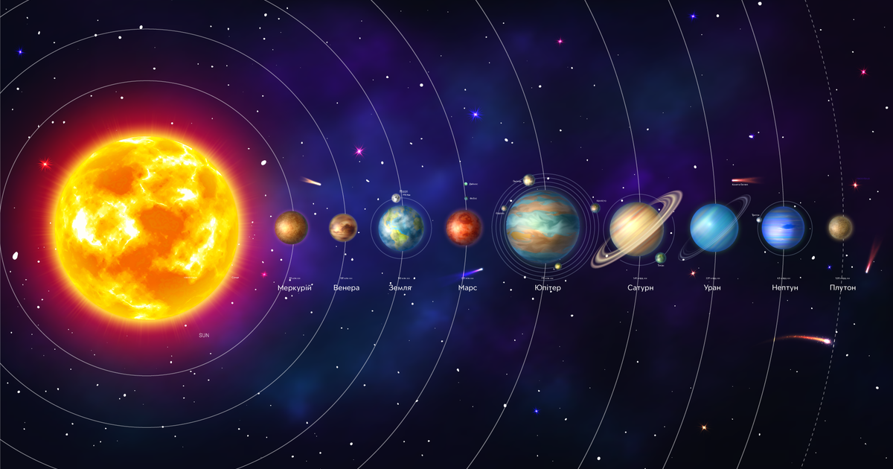
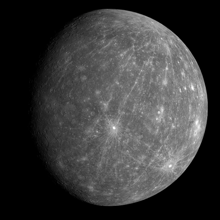
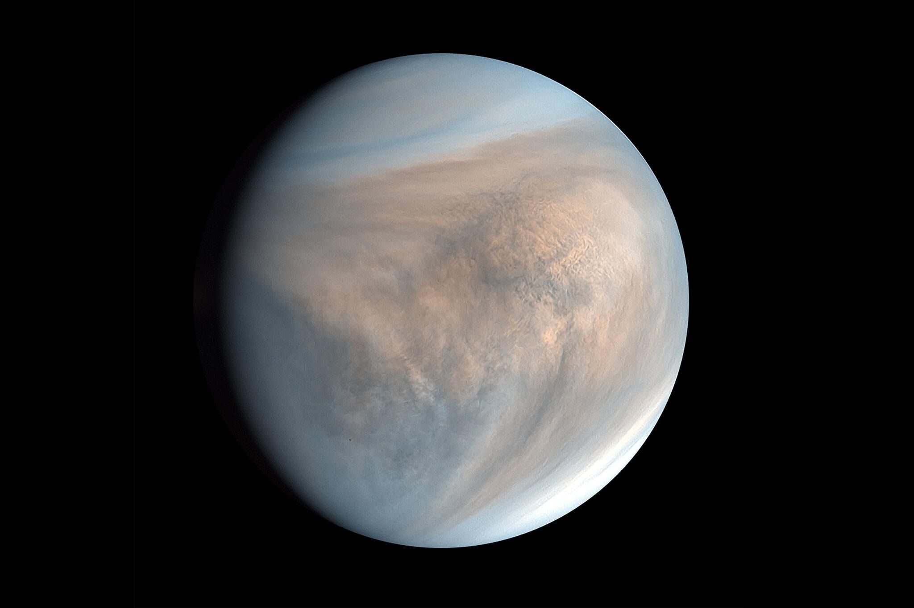
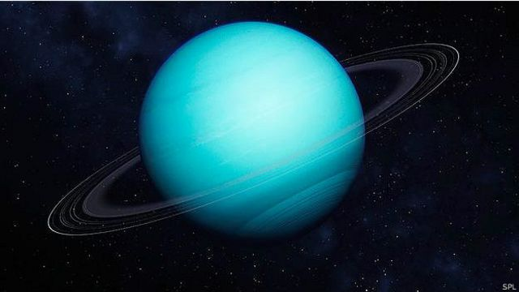
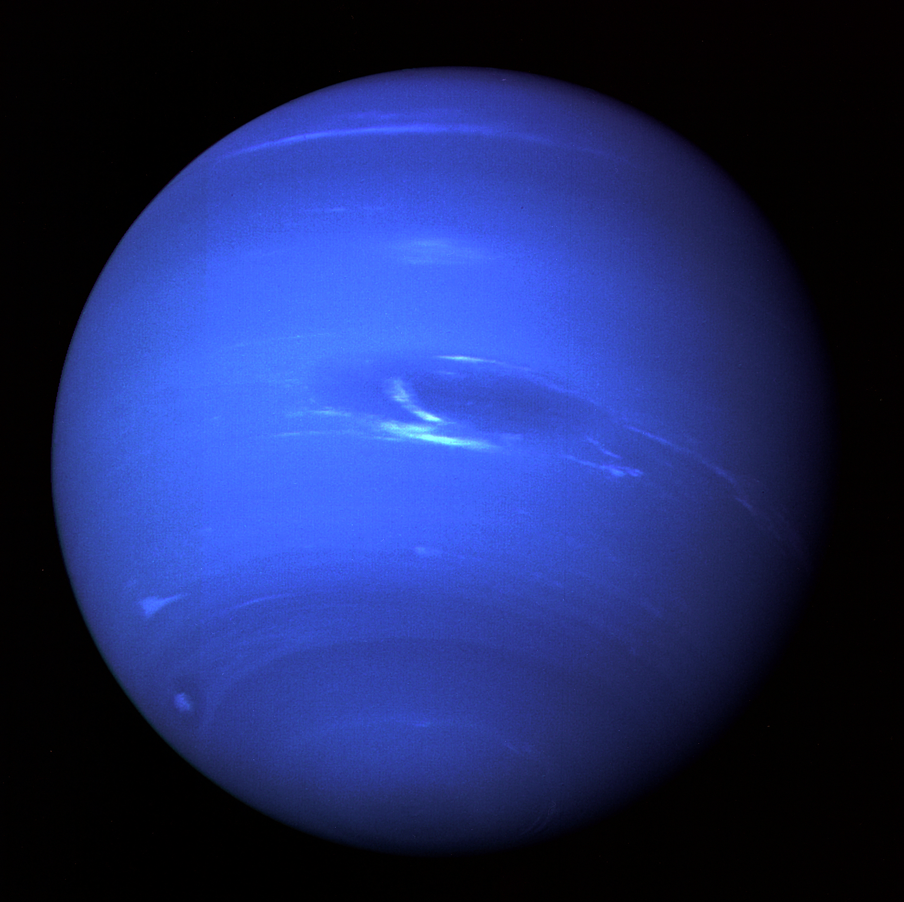

Цікаві факти про планети сонячної системи
Цікаві факти про планети сонячної системи розширять ваші знання та дадуть змогу порівняти їх з нашою планетою Земля.
Цікаві факти про планету Меркурій
- Найближча планета до Сонця найменшого розміру в системі (всього 0,055 розміру Землі). Діаметр Меркурія приблизно 4878 км., тобто рівний Атлантичному океану.
- У Меркурія немає супутників.
- Планета має розріджену атмосферу, що складається з атомів, витіснених з її поверхні сонячним вітром.
- На поверхні Меркурія різниця між температурами ночі і дня дуже відрізняється. Так, в нічних (протилежних від Сонця) областях планети температура може досягати мінус 180˚ С, а в денних (обернених до Сонця) областях може підніматися до 430˚ С.
- Один день на Меркурії відповідає 58 дням на Землі.
Цікаві факти про планету Венера
- Планета, близька за своїми розмірами до Землі (близько 0,815).
- Атмосфера Венери на 96,5 % (по об’єму) складається з вуглекислого газу, решту 3,5 % складає азот, кисень, окис вуглецю і водяна пара.
- Венера обертається навколо Сонця у зворотний бік, зі сходу на захід (проти часової стрілки).
- Температура її перевищує 400 градусів за Цельсієм, є однією з найгарячіших планет. Ймовірно , що пояснюється це парниковим ефектом , викликаним щільною атмосферою і великою кількістю вуглекислого газу.
- У Венери відсутні супутники.
- Ще більш цікаво йдуть справи з Венерою, 1 день на якій триває 243 земних діб, а рік всього 225.
Цікаві факти про планету Земля

- Земля є унікальною за своєю структурою планетою (насамперед через гідросферу). Атмосфера нашої планети також значно відрізняється, утримуючи в собі вільний кисень.
- Місяць є єдиним великим супутником Землі і всієї внутрішньої групи Сонячної системи.
Цікаві факти про планету Марс

- Планета, яка значно менше Землі (всього 0,107 її маси).
- Атмосфера Марса переважно містить в собі вуглекислий газ.
- На поверхні планети є вулкани, найбільш відомий з яких Олімп. Він має висоту приблизно 27 км., і ширину близько 520 км, що перевищує всі можливі земні аналоги. Рифтові западини Марса свідчать про геологічної активності , що закінчилася близько 2 млн. років тому.
- Яскравий червоний колір планети обумовлюється великим вмістом оксиду заліза в її грунті.
- Є припущення, що супутники Фобос і Деймос є захопленими Марсом астероїдами.
- Середня температура мінус 60 градусів.
- Рік на Марсі = 687 дням земного обчислення. А ось день на Марсі максимально наближений до дня земного – це 24 години, 39 хв. і 35 сек.
- У Марса дуже товста кора – приблизно п’ятдесят кілометрів на перетині.
Цікаві факти про планету Юпітер

- Планета Юпітер – найбільша планета, перевищує масу Землі приблизно в 318 разів.
- Складається переважно з водню і гелію.
- Висока температура усередині планети обумовлює безліч вихрових структур в його атмосфері, наприклад, смуги хмар.
- Юпітер має 65 супутників, 4 найбільших з яких ( Ганімед, Європа, Іо і Каллісто ) в деяких моментах нагадують планети земної групи. Наприклад, їм властиві внутрішній нагрів і вулканічна активність. Цікавий факт, що найбільший супутник Ганімед , аналога якому немає в Сонячній системі, перевищує за розміром сам Юпітер.
- Магнітне поле Юпітера настільки потужне, що щодня збагачує магнітне поле нашої планети мільярдами Ватт.
Цікаві факти про планету Сатурн

- Сатурн за розмірами в 9 разів більший від Землі.
- Навколо нього давно було виявлено декілька кілець, тому цю планету називали смугастою. Із Землі звичайно видно 3—4 кільця і щілини між ними. Було встановлено, що існує більше сотні окремих кілець.
- Атмосфера Сатурна, як і Юпітера, в основному складається з метану, але тут вона приблизно вдвічі товща і всі процеси в ній протікають повільніше.
- За підтвердженими даними, у Сатурна є 62 супутника, два з яких ( Титан і Енцелад ) виявляють геологічну активність. Проте активність ця обумовлена рухом льоду і не схожа на внутрішні планети Сонячної системи.
Цікаві факти про планету Уран
- Планета, перевищує масу Землі всього в 14 раз, є найбільш легкою з усієї зовнішньої групи. Уран в 4 рази більший за Землю.
- Астрономічною сенсацією стало відкриття десяти кілець Урана. Вони дуже тонкі, складаються з кам’яних частинок і мають зовсім низьку відбивну здатність. Площина кілець майже збігається з площиною екватора.
- Уран унікальний тим, що здійснює своє обертання « на боці», оскільки нахил його осі обертання близько 98 градусів.
- Ця планета має дуже холодне ядро, випромінюючи велику кількість тепла в космос.
- Відомі 27 супутників Урана, в числі яких Аріель, Міранда, Оберон, Титанія та інші.
Цікаві факти про планету Нептун
- Нептун – планета-гігант, у 4 рази перевищує розмір Землі. Вона випромінює багато внутрішнього тепла , але поступається за цим показником Юпітера і Сатурну.
- Відомі 13 супутників Нептуна , найбільший з яких ( Тритон ) проявляє геологічну активність і має на своїй поверхні гейзери рідкого азоту. Це єдиний супутник , який рухається у зворотному напрямку.
- Цікавий факт, що планета супроводжується так званими Нептунскімі троянцями, що представляють собою тіла астероїдного типу.